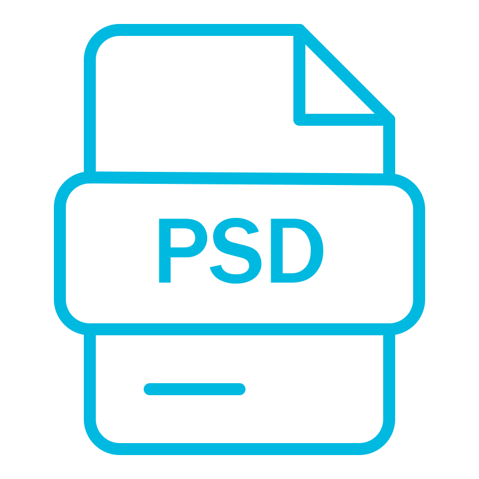

DOC
File Type: Document
Extension: .doc
Associated Applications: Microsoft Word, Google Docs
Reasons for Using: For creating and formatting text-rich documents.
Relevant Images: Text, images, tables, charts
Compatibility: Compatible with most word processors
Quality and File Size: High-quality formatting; larger file size than plain text.
RTF
File Type: Rich Text Format
Extension: .rtf
Associated Applications: Microsoft Word, WordPad
Reasons for Using: Cross-platform formatted text files
Relevant Images: Text, basic formatting
Compatibility: Supported by most word processors
Quality and File Size: Moderate size; retains basic formatting.
TXT
File Type: Plain Text
Extension: .txt
Associated Applications: Notepad, TextEdit
Reasons for Using: Simple, lightweight storage for text data
Relevant Images: Plain text only
Compatibility: Universally supported
Quality and File Size: Small file size; no formatting.

CSV
File Type: Comma-Separated Values
Extension: .csv
Associated Applications: Microsoft Excel, Google Sheets
Reasons for Using: Data storage in tabular format
Relevant Images: Data rows and columns
Compatibility: Compatible with spreadsheet applications
Quality and File Size: Small; lacks formatting beyond basic data structure.
PPTX
File Type: Presentation
Extension: .pptx
Associated Applications: Microsoft PowerPoint, Google Slides
Reasons for Using: Creating slide-based presentations
Relevant Images: Slides with text, images, and animations
Compatibility: Compatible with most presentation software
Quality and File Size: Can be large; supports multimedia content.
MP3
File Type: Audio
Extension: .mp3
Associated Applications: VLC, iTunes
Reasons for Using: Popular format for music and audio
Relevant Images: Audio content only
Compatibility: Compatible with most media players
Quality and File Size: Quality varies by bitrate; smaller than WAV.

MP4
File Type: Video
Extension: .mp4
Associated Applications: VLC, QuickTime
Reasons for Using: Versatile video format with high compression
Relevant Images: Video with optional audio
Compatibility: Works with most video players and online platforms
Quality and File Size: High quality with manageable size.
BMP
File Type: Bitmap Image
Extension: .bmp
Associated Applications: Paint, Photoshop
Reasons for Using: High-quality uncompressed images
Relevant Images: High-resolution image data
Compatibility: Supported by most image editors
Quality and File Size: High quality, large file size due to no compression.
JPG
File Type: JPEG Image
Extension: .jpg, .jpeg
Associated Applications: Photoshop, GIMP
Reasons for Using: Popular for web images due to compression
Relevant Images: Compressed photographic images
Compatibility: Compatible with most image viewers
Quality and File Size: Good quality with smaller size; compression may reduce detail.

PDF
File Type: Portable Document Format
Extension: .pdf
Associated Applications: Adobe Acrobat, PDF readers
Reasons for Using: Universal document sharing
Relevant Images: Text, images, form fields
Compatibility: Supported across all major platforms
Quality and File Size: Quality remains intact; size varies with content.
XLSX
File Type: Spreadsheet
Extension: .xlsx
Associated Applications: Microsoft Excel, Google Sheets, LibreOffice Calc
Reasons for Using: Used for data organization, calculations, and charting in spreadsheet format.
Relevant Images: Rows and columns of data, charts, formulas
Compatibility: Supported by most spreadsheet programs, though some advanced features may not fully transfer.
Quality and File Size: File size depends on data complexity; can be large with formulas and embedded objects.
ACCDB
File Type: Database
Extension: .accdb
Associated Applications: Microsoft Access
Reasons for Using: Used for storing and managing relational databases in Microsoft Access.
Relevant Images: Tables, forms, queries, and reports
Compatibility: Primarily works with Microsoft Access; limited compatibility with other database software.
Quality and File Size: File size can be large depending on the data and objects stored.

SQL
File Type: Structured Query Language Script
Extension: .sql
Associated Applications: MySQL, PostgreSQL, SQLite, Microsoft SQL Server
Reasons for Using: For writing, managing, and executing database queries.
Relevant Images: Plain text with SQL commands
Compatibility: Works with SQL-based database systems; can be imported or exported.
Quality and File Size: Typically small file size; purely text-based.
APK
File Type: Android Package
Extension: .apk
Associated Applications: Android OS (for app installation), APKMirror (for downloading)
Reasons for Using: Contains all components needed to install an Android app.
Relevant Images: Includes app resources like images, XML files, and code
Compatibility: Compatible only with Android devices.
Quality and File Size: File size varies depending on the app’s content; larger for apps with media resources.

HTML
File Type: HyperText Markup Language
Extension: .html
Associated Applications: Web browsers (Chrome, Firefox), code editors (VS Code, Sublime Text)
Reasons for Using: Standard format for web pages and online content.
Relevant Images: Structure and content of web pages with embedded images and multimedia
Compatibility: Supported by all major web browsers.
Quality and File Size: Small file size for plain HTML; file size can increase with embedded resources.

CSS
File Type: Cascading Style Sheets
Extension: .css
Associated Applications: Web browsers, code editors (VS Code, Atom)
Reasons for Using: Defines the style, layout, and design of web pages.
Relevant Images: Style definitions for fonts, colors, layouts
Compatibility: Works alongside HTML in web browsers.
Quality and File Size: Typically small in size; larger if it contains many complex style rules.

PY
File Type: Python Script
Extension: .py
Associated Applications: Python interpreter, code editors (PyCharm, VS Code)
Reasons for Using: To execute scripts and programs written in Python.
Relevant Images: Plain text with Python code
Compatibility: Compatible with any Python environment.
Quality and File Size: Small file size; purely text-based scripts.

JS
File Type: JavaScript Script
Extension: .js
Associated Applications: Web browsers, code editors (VS Code, Sublime Text)
Reasons for Using: To add interactivity and dynamic behavior to web pages.
Relevant Images: Dynamic behavior, animations, and data manipulation on web pages.
Compatibility: Compatible with all modern web browsers that support JavaScript.
Quality and File Size: Small to medium file size; used for client-side scripting.
JSON
File Type: JavaScript Object Notation
Extension: .json
Associated Applications: Code editors (VS Code, Sublime Text), web APIs, data interchange platforms
Reasons for Using: To store and transport structured data, commonly used for configuration and API responses.
Relevant Images: Structured data in key-value pairs, commonly used for data exchange.
Compatibility: Compatible with various programming languages and tools.
Quality and File Size: Small file size; easy to read and parse by machines and humans.
XML
File Type: Extensible Markup Language
Extension: .xml
Associated Applications: Text editors (VS Code, Sublime Text), XML parsers, web services
Reasons for Using: To store and transport structured data in a human-readable format.
Relevant Images: Hierarchical data structures with opening and closing tags.
Compatibility: Compatible with a wide variety of programming languages, parsers, and web applications.
Quality and File Size: Medium file size; can contain large amounts of data in a flexible, extensible format.

MD
File Type: Markdown
Extension: .md
Associated Applications: Text editors (VS Code, Sublime Text), Markdown processors (Markable, Dillinger)
Reasons for Using: To write simple, readable text that can be converted to HTML for web publishing.
Relevant Images: Plain text with special syntax for formatting headings, lists, links, and images.
Compatibility: Compatible with a variety of text editors and tools that render Markdown to HTML.
Quality and File Size: Small file size; ideal for documentation, README files, and web content.
EXE
File Type: Executable File
Extension: .exe
Associated Applications: Windows operating system, installation programs, system utilities
Reasons for Using: To run programs or applications on a Windows-based system.
Relevant Images: Icon representing a program or utility that can be launched on Windows.
Compatibility: Only compatible with Windows operating systems, although some can be run on other platforms using emulators or compatibility layers.
Quality and File Size: Varies depending on the program; can range from small utilities to large software packages.
PNG
File Type: Portable Network Graphics
Extension: .png
Associated Applications: Image viewers, photo editing software (Photoshop, GIMP), web browsers
Reasons for Using: To store digital images with lossless compression, often used for web graphics and icons.
Relevant Images: Images with transparent backgrounds and high-quality compression without loss of data.
Compatibility: Widely supported by image viewers, browsers, and design software.
Quality and File Size: Lossless compression results in high image quality, but larger file sizes than JPG.
ZIP
File Type: Compressed Archive
Extension: .zip
Associated Applications: Archive managers (WinRAR, 7-Zip), file explorers
Reasons for Using: To compress files and folders for easier storage, sharing, and transfer.
Relevant Images: Compressed folder containing one or more files or folders.
Compatibility: Supported by most operating systems and archive utilities.
Quality and File Size: Compressed format; reduces file size for faster uploads and downloads.
GIF
File Type: Graphics Interchange Format
Extension: .gif
Associated Applications: Image viewers, web browsers, social media platforms
Reasons for Using: To display short animations or images with transparency, often used for web graphics and memes.
Relevant Images: Animated or static images with limited color range.
Compatibility: Supported across all browsers and social media platforms.
Quality and File Size: Compressed format; supports small file sizes but limited to 256 colors.
AVI
File Type: Audio Video Interleave
Extension: .avi
Associated Applications: Media players (VLC, Windows Media Player), video editing software
Reasons for Using: To store uncompressed or minimally compressed video for high-quality playback.
Relevant Images: Video files with high visual quality and minimal compression.
Compatibility: Compatible with most media players, but larger in file size compared to MP4.
Quality and File Size: High-quality video, typically with large file sizes due to minimal compression.

PSD
File Type: Adobe Photoshop Document
Extension: .psd
Associated Applications: Adobe Photoshop, Affinity Photo
Reasons for Using: To edit and store images with layers, adjustments, and high-quality detail.
Relevant Images: High-quality images with editable layers and effects.
Compatibility: Primarily compatible with Adobe Photoshop, but some other software can import PSDs.
Quality and File Size: Large file sizes due to high-resolution and multiple editable layers.